Contents
- Canevas TD2 - Morphologie Mathématique
- Exercice 1 : corner extraction
- Exercice 2 : diagonal dashed lines detection
- Exercice 3 : decompose a binary image of a circuit board in its main
- components
- Reading the image
- Segmentation of holes
- Segmentation of square islands
- Segmentation of circle islands
- Segmentation of rectangular islands
- Segmentation of thick connections
- Segmentation of thin connections
Canevas TD2 - Morphologie Mathématique
% Nom : % Prénom : % Groupe TD : clear all; close all;
Exercice 1 : corner extraction
% Reading the image : complete the code so as to get a binary image with a % white tree and black background I=im2bw(imread('../images/tree.jpg')); I=~I; imshow(I); % Comment all steps of your approach (SE, operation, result) to extract corners: SE=strel('disk',3); IC=imclose(I,SE); figure; imshow(IC); title('image closing') diffIIC=IC - I; figure; imshow(diffIIC); title('image - image closing : concave corners !') SE=strel('disk',3); IO=imopen(I,SE); figure; imshow(IO); title('image opening') diffIIO=I - IO; figure; imshow(diffIIO); title('image opening - image : convex corners !') corners = diffIIC + diffIIO; figure; imshow(corners); title('image corners !')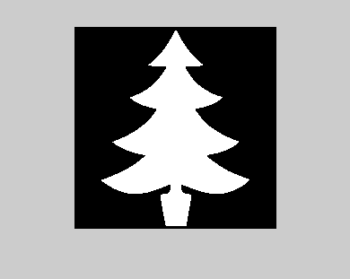 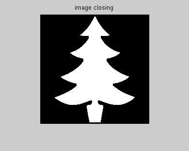 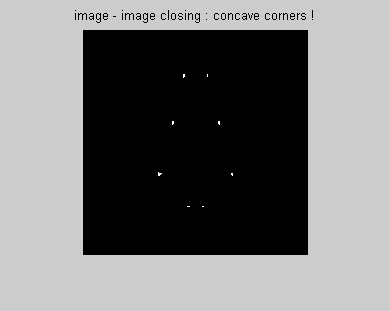 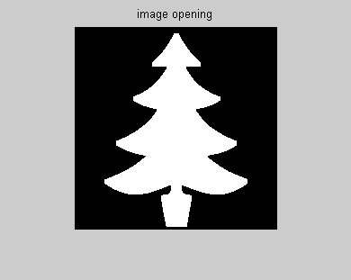 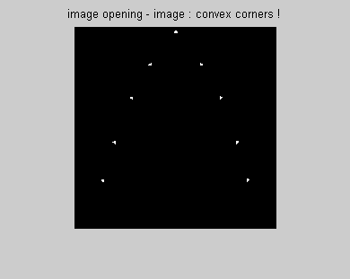 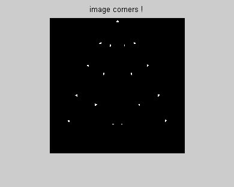
Exercice 2 : diagonal dashed lines detection
clear all; close all; I=rgb2gray(imread('../images/dashedLines.bmp')); imshow(I); % Closing by a segment : selection of oblic lines I1=imclose(I,strel('line',10,45)); figure,imshow(I1); % Erosion by a segment : filling space between lines segments I2=imerode(I1,strel('line',50,45)); figure,imshow(I2);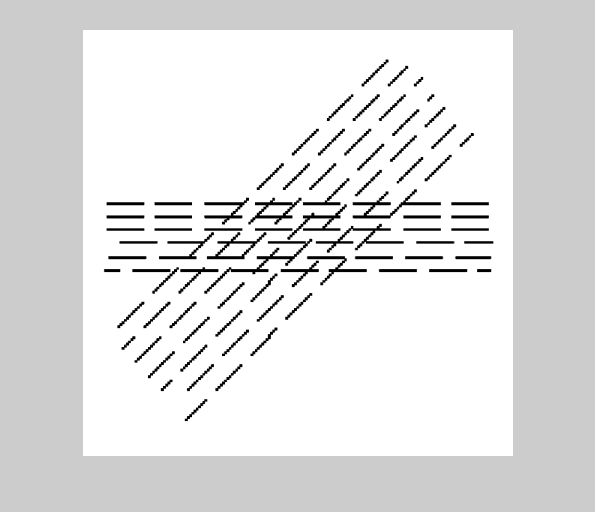 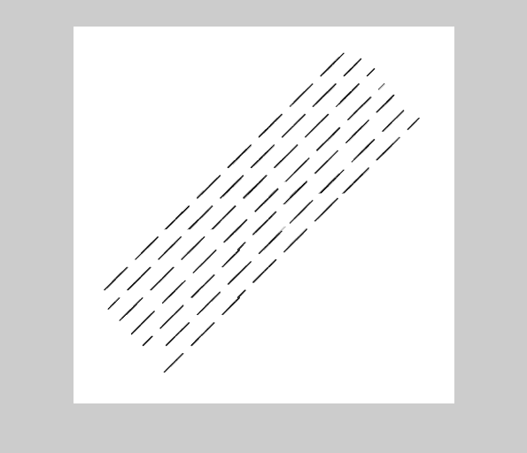 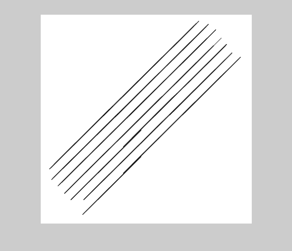
Exercice 3 : decompose a binary image of a circuit board in its main
components
Reading the image
I=im2bw(imread('../images/circuit.jpg'),0.2);
imshow(I);
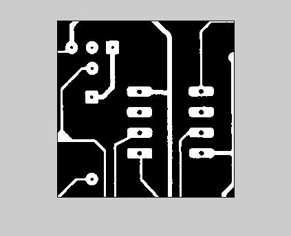 Segmentation of holes
% Code : SE=strel('disk',5); IC=imclose(I,SE); figure; imshow(IC); title('image closing') diffIIC=IC - I; figure; imshow(diffIIC); title('image - image closing') res = bwareaopen(diffIIC, 10); res=imclearborder(res); imshow(res); imshow(res); title('Segmented holes') % Visualization %1- determine the connected components of your resulting binary image res L = bwlabel(res, 4); %2- convert the labeled image to colored components image Lrgb = label2rgb(L, 'jet', 'k', 'shuffle'); % k : black color of the 0 component figure, imshow(Lrgb) title('Colored holes (Lrgb)') % 3- superimpose labeled regions to original image figure, imshow(I), hold on himage = imshow(Lrgb); set(himage, 'AlphaData', 0.8); title('Lrgb superimposed transparently on original image') % Comment all steps of your approach (SE, operation, result) : % 1) closing with a circular element of radius superior to the greatest hole % radius to fill holes % Result : it closes holes + some noise artefacts % 2) substraction between IC and I to get holes + noise % Result : holes + noise % 3) filter noise according with their area + noise on borders % Result : we get holes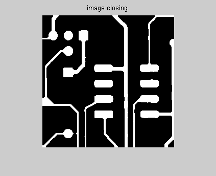 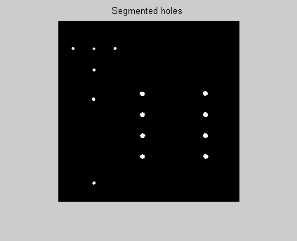 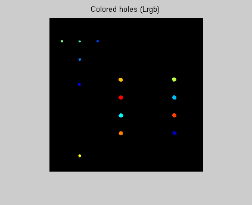
Segmentation of square islands
Code :
SE=strel('square',17); Idep=res+I; IO=imopen(Idep,SE); figure; imshow(IO); title('image opening with a square SE') Isq=(~res).*IO; figure; imshow(Isq); title('square with holes') % Visualization %1- determine the connected components of your resulting binary image res L = bwlabel(Isq, 4); %2- convert the labeled image to colored components image Lrgb = label2rgb(L, 'jet', 'k', 'shuffle'); % k : black color of the 0 component figure, imshow(Lrgb) title('Colored holes (Lrgb)') % 3- superimpose labeled regions to original image figure, imshow(I), hold on himage = imshow(Lrgb); set(himage, 'AlphaData', 0.8); title('Lrgb superimposed transparently on original image') % Comment all steps of your approach (SE, operation, result) : % 1) opening with a square element of width equal to 17 (measured in the % image) on the previous closed and cleared image. If we take 15, we get rectangular islands too. % Result : ok but we have to empty holes by multiplying with inversed holes % image. % 2) multiplication with inversed holes image (.* to use to multiply element to element) % Result : cqfd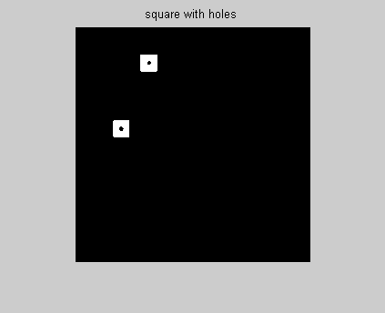 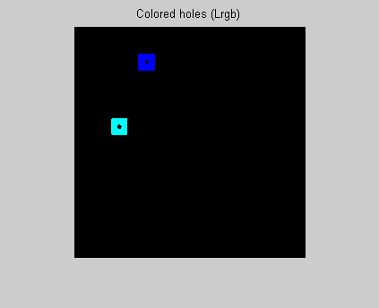 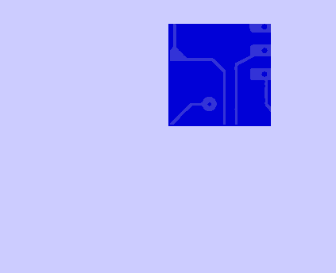
Segmentation of circle islands
Code :
SE=strel('square',14); Idep=res+I; IO3=imopen(Idep,SE); figure; imshow(IO3); title('image opening with a square SE') Id=Idep-IO3; figure; imshow(Id); title('circles without rectangular/square islands') SE=strel('disk',8); IO4=imopen(Id,SE); figure; imshow(IO4); title('image opening with a disk SE, radius 8') % add holes IO4=IO4.*(~res); % Visualization %1- determine the connected components of your resulting binary image res L = bwlabel(IO4, 4); %2- convert the labeled image to colored components image Lrgb = label2rgb(L, 'jet', 'k', 'shuffle'); % k : black color of the 0 component figure, imshow(Lrgb) title('Colored circular islands (Lrgb)') % 3- superimpose labeled regions to original image figure, imshow(I), hold on himage = imshow(Lrgb); set(himage, 'AlphaData', 0.8); title('Lrgb superimposed transparently on original image') % Comment all steps of your approach (SE, operation, result) : % problem : rectangular islands contains circular objects % first, it's necessary to remove rectangular objects and square objects. % Then, substract the result to the original image without holes to get circles + other remaining objects. % Then, open with a disk and multiplication with inversed holes image (.* to use to multiply element to element) % Result : cqfd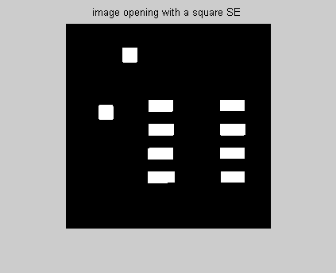 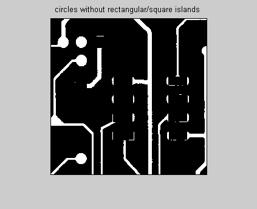 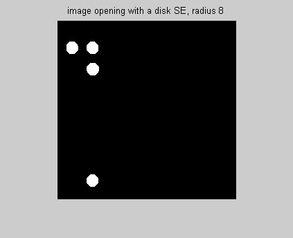 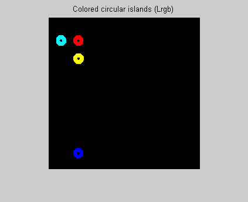
Segmentation of rectangular islands
Code :
SE=strel('rectangle',[12 20]); %[nb of rows nb of columns] Idep=res+I; IO5=imopen(Idep,SE); figure; imshow(IO5); title('image opening with a rectangular SE') % add holes IO5=IO5.*(~res); % Visualization %1- determine the connected components of your resulting binary image res L = bwlabel(IO5, 4); %2- convert the labeled image to colored components image Lrgb = label2rgb(L, 'jet', 'k', 'shuffle'); % k : black color of the 0 component figure, imshow(Lrgb) title('Colored rectangular islands (Lrgb)') % 3- superimpose labeled regions to original image figure, imshow(I), hold on himage = imshow(Lrgb); set(himage, 'AlphaData', 0.8); title('Lrgb superimposed transparently on original image') % Comment all steps of your approach (SE, operation, result) : % Start with the original image without holes, then open with a rectangular SE % Then, multiplication with inversed holes image (.* to use to multiply element to element) % Result : cqfd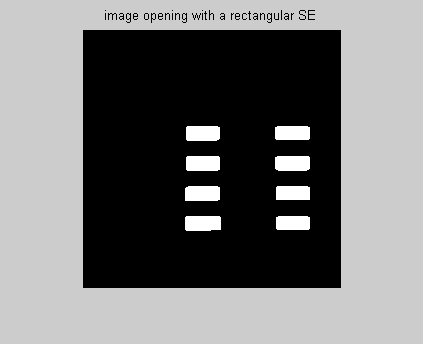 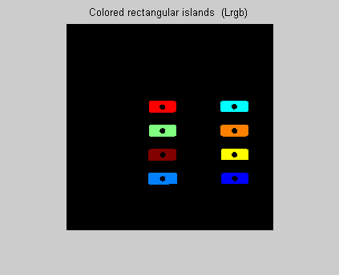 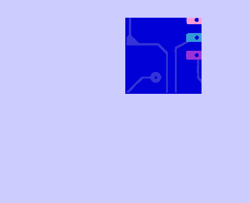
Segmentation of thick connections
Code :
Idep=I-Isq-IO4-IO5; SE=strel('square',5); IO6=imopen(Idep,SE); figure; imshow(IO6); title('residue image opening with a small rectangular SE') % Visualization %1- determine the connected components of your resulting binary image res L = bwlabel(IO6, 4); %2- convert the labeled image to colored components image Lrgb = label2rgb(L, 'jet', 'k', 'shuffle'); % k : black color of the 0 component figure, imshow(Lrgb) title('Colored thick connections (Lrgb)') % 3- superimpose labeled regions to original image figure, imshow(I), hold on himage = imshow(Lrgb); set(himage, 'AlphaData', 0.8); title('Lrgb superimposed transparently on original image') % Comment all steps of your approach (SE, operation, result) : % Start with original image without all circle, square and rectangular % islands. Then open with a square included into thick connections but not % into thin ones. % Result : cqfd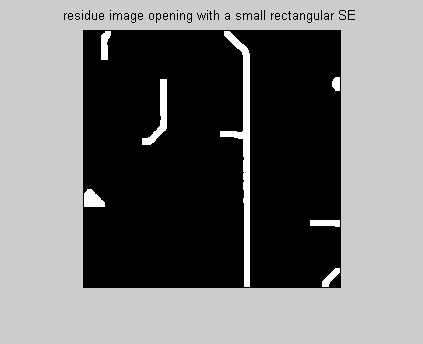 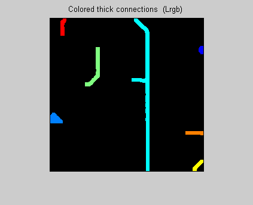
Segmentation of thin connections
Code :
Idep=I-Isq-IO4-IO5-IO6; SE=strel('square',3); IO7=imopen(Idep,SE); figure; imshow(IO7); title('residue image opening with a small rectangular SE') % Visualization %1- determine the connected components of your resulting binary image res L = bwlabel(IO7, 4); %2- convert the labeled image to colored components image Lrgb = label2rgb(L, 'jet', 'k', 'shuffle'); % k : black color of the 0 component figure, imshow(Lrgb) title('Colored thin connections (Lrgb)') % 3- superimpose labeled regions to original image figure, imshow(I), hold on himage = imshow(Lrgb); set(himage, 'AlphaData', 0.8); title('Lrgb superimposed transparently on original image') % Comment all steps of your approach (SE, operation, result) : % Start with original image without all islands and without thick % connections. Then open with a small square included into thin connections % Result : cqfd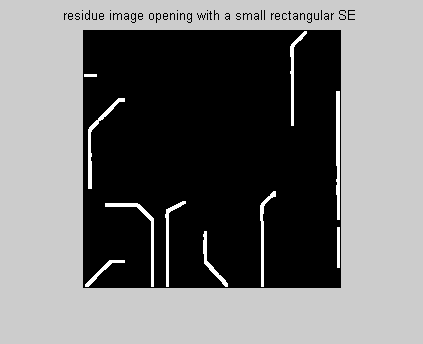 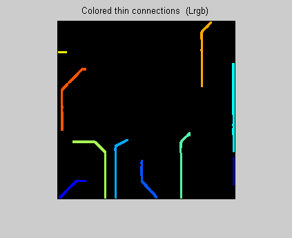 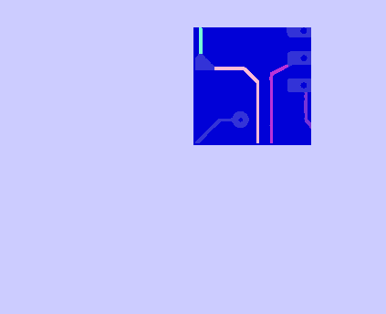